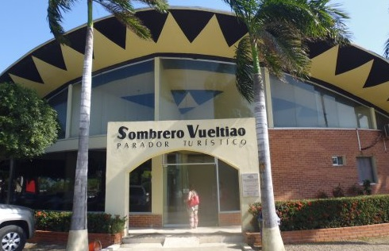
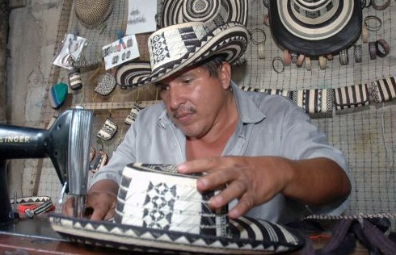
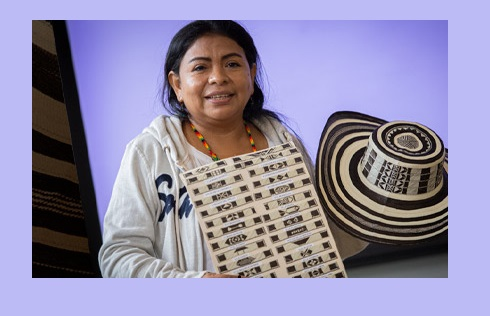

NOTICIAS
 El parador turístico es cubierto por un enorme sombrero vueltiao que no es de paja sino de hierro y concreto y si las...
 Se elabora con la fibra de la caña flecha, de la cual se extrae la fibra vegetal con la que la comunidad indígena Zenú elabora Dif...
 El sombrero vueltiao de Tuchín tiene imitación 'Made in China' Se venden más baratos, por las calles se consiguen...
Así reaccionó el papa cuando le pusieron el sombrero vueltiao en Villavicencio, aunque no es típico de la región llanera...
Equipo